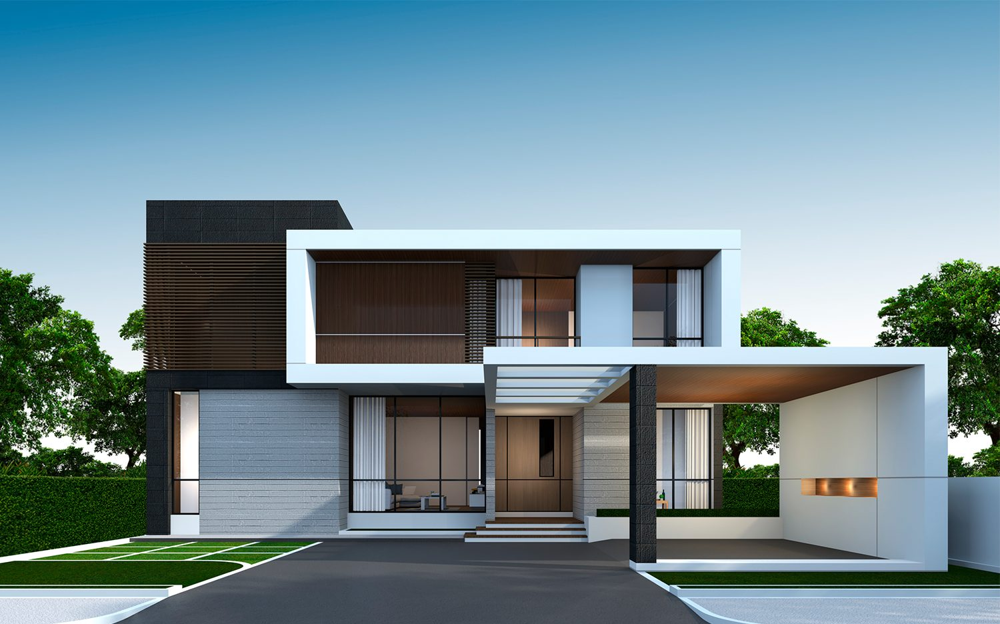

Gothic Architecture
Gothic architecture is a style that flourished in Europe during the High and Late Middle Ages. It evolved
from Romanesque architecture and was succeeded by Renaissance architecture. Its characteristics include
the pointed arch, the ribbed vault, and the flying buttress.
Baroque Architecture
Baroque architecture began in the late 16th century in Italy and took the Roman vocabulary of the
Renaissance and used it in a new rhetorical and theatrical fashion, often to express the triumph of the
Catholic Church and the absolutist state.
Modern Architecture
Modern architecture, or modernist architecture, is a style of architecture that emerged in the first half
of the 20th century and became dominant after World War II. It emphasizes function, simplicity, and a
lack of ornamentation.
